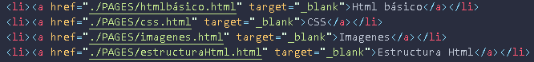

Es un editor de código
Es un programa que permite escribir y editar código fuente en un lenguaje de programación. Los programadores y desarrolladores lo utilizan para crear y probar aplicaciones informáticas, sitios web y sistemas operativos.
Al abrir la app tenes que poner "file" y luego ir a "open folder" y de ahí seleccionar la carpeta ya creada o crearla poniendo "Nueva Carpeta", ese sera el repositorio/carpeta principal donde se trabajará
"File" significa archivo y son las cosas sueltas dentro de la carpeta principal como el "index.html", y "Folder" significa carpeta. Existen varias carpetas adentro de la carpeta principal.
La principal en este caso se llama "Infor2doC" y las que estan adentro de esta(la que se ven a la izquierda de la app) tienen un nombre predeterminado por el profe que son
Es un lenguaje de programación que se utiliza para crear y estructurar páginas web. Se basa en etiquetas y atributos para definir cómo se muestran los elementos de una página en un navegador web.
CSS son las siglas de Cascading Style Sheets, que en español significa Hojas de Estilo en Cascada. Es un lenguaje de diseño gráfico que se utiliza para definir la apariencia de las páginas web.
La etiqueta de esta es "p" y sirve para poder escribir en html literalmente un párrafo
Las listas estan dividas en la ordenada(ol) y la desordenada(ul). La ordenada es la que aparece numerada, que te puede servir a la hora de hacer un ranking:
Se utilizan 2 maneras de enlazar
Para enlazar con estos solo se tiene que utilizar la etiqueta "a" y en la parte entre comillas de "href"(que significa referencia de hypertexto) vas a poner la carpeta donde queres que se enlaze usando "./nombredelacarpeta" o si estas en un archivo adentro de la carpeta "pages" vas a usar "../nombredelacarpeta" y en la parte entre "><" vas a poner el nombre del archivo donde vas a entrar(ejemplo en index ponés Home)
Se puede sacarle la linea de abajo en css usando "text-decoration-line: none;", como hice en la página de entrada de esta web(que tmb le puse el color blanco a las letras de enlaces) Y otra data es que para que te quede el link dentro de una viñeta, en una lista, se pone el el "a" adentro del "li" y se escribe en la parte del enlace, no de la lista, pq sino te aparece como enlace  De esta forma
Se reemplaza en vez de colocar lo de la carpeta, el link de lo que queres que se enlace, por ejemplo a google y para que este enlace se abra en otra pestaña se coloca el "target="_blank" después de href:
Div es una etiqueta que sirve para discriminar/dividir/separar/diferenciar cada cosa. El profe la mostro varias veces como cajita pero sirve para diferenciar por temas por ejemplo(como estuve haciendo) y configurar el diseño por separado. El truco del div class, es la etiqueta "class" que se pone adentro de la etiqueta de apertura de Div y se le pone un nombre único para a la hora de configurar qsy el color en style.css solo se configure lo seleccionado(como estuve haciendo en estos). En lo personal me gusta usar directo el class, ya que podes poner directo en la etiqueta el class para diferenciarlo o usar el nombre de la etiqueta directo en style pero tmb sirve para cuando queres diferencias varias etiquetas juntas de un mismo color, como estuve haciendo acá